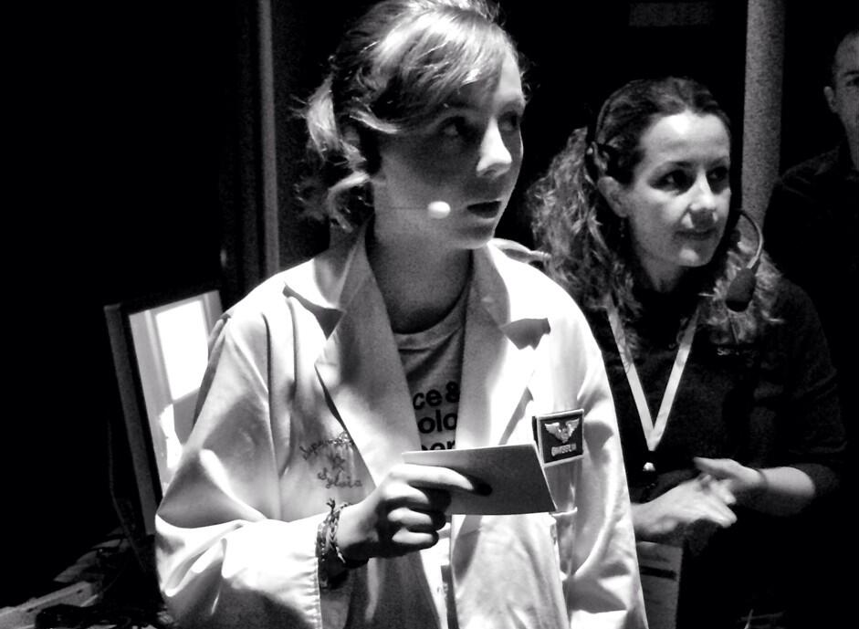
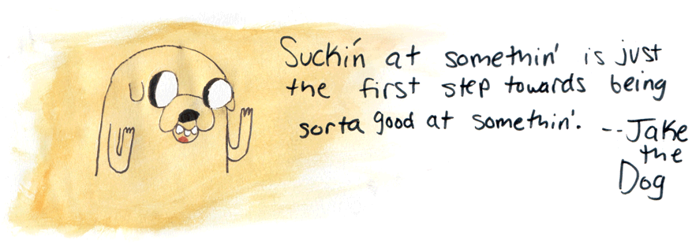

The Maker Movement and Me: 4 years and still failing awesome!
Hey there peeps! In case you didn't know, My name is Sylvia and I’m a 12 year old girl from Northern California, and I've been making this Super-Awesome webshow all about how to make cool stuff since 2010, from paper rockets, to Arduino microcontrollers, to weird and sticky slime. I even try to show awesome experiments, and visualize how stuff works, or the science behind it. I really got inspired to get into making this show and the maker movement by going to Maker Faire, this huge event where thousands of people come to see or show off amazing things they have made. If you haven't heard about it, check out the info here, or see my first Maker Faire Episode.
Before going to my third Maker Faire when I was 8, my dad and I wanted to bring something cool to show off, but we weren’t very good at making real things, so we decided to make a show! I sung the theme song, we made a lab coat, I ran around and did crazy stuff for the intro, and then I built a kit and experimented with it for everyone to see. When we finished, I drew up my very own business card that we then handed out at Maker Faire only a few days later. I got noticed by a bunch of cool people, and by Summer I was doing shows for Make Magazine online, and less than a year later, I was on the cover of Make Magazine! People around the country were asking me to come talk (TEDx Redmond, TEDx San Jose), teach (CMK, STEAM Day), or just be there and make things with them. It was crazy!
"I want more people to become less focused on success, and more on just trying new things outside their comfort zone."

Now that I’ve done a lot, and gone to a lot of places, like Kansas city, New york, and even outside the US because of the show I've done, I've learned so much about persistence, drive, and... frustration. Recently, I went to TEDx San Diego and I did a talk! It was so cool to be there and meet so many awesome people, but the talk itself on stage was crazy hard to do! I practiced so much and did it perfectly off stage, but actually being on stage is completely different... and I forgot most of my talk.
I completely failed and got everyone confused, but I got my message out. I learned a lot and I even got a standing ovation just by being honest about how hard it was! I was so happy to know that the audience understood that I want more people to become less focused on success, and more on just trying new things outside their comfort zone. People stop themselves, and get stuck on that first step. Making and creating is one of those things that people need that little push of inspiration to get them started. That’s where I think I can come in. I really want my shows to be a resource for kids or adults (and especially girls) who are still stuck on that first step, and need a little push.
The first baby steps are hard, only because it’s your choice to take them and then to deal with the fact that you might not be very good at first. And sometimes girls who might want to get into electronics or making things can sometimes get stuck because they think it’s only for boys... and that SUCKS! And sometimes they think they'll look uncool or stupid in front of their peers. WRONG! Ignore them, anything you create is unique and your own, even if you copied some part of the idea and built on it, everyone starts from something.
I hope all you peeps reading have been inspired, and maybe gotten that tiny little push you needed. Always remember if you’re ever bored or need to get out of your chair, just get out there and make something!!!!! And don’t be sad if it doesn’t work or you totally fail, I’m proof that it’s never the end when that happens, only the beggining of you getting better.



")


")